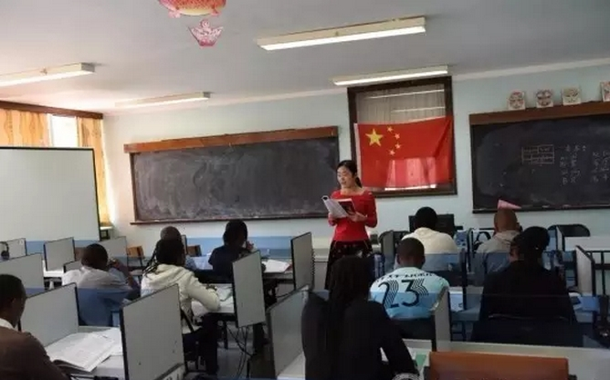
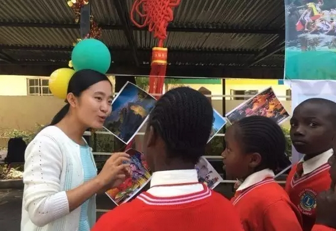

志愿感言 | 情不知所起，一往而深（肯尼亚）
 1,453
1,453
作者：肯尼亚埃格顿大学孔子学院 杨秋普
我的本科专业是植物保护，研究生专业是昆虫生理生化与分子生物学，在南京农业大学完成七年的学习之后，我选择了来到这里——肯尼亚埃格顿大学孔子学院。
几乎所有人都会诧异我的专业与现在工作的关联性。这所孔院是我的母校与埃格顿大学联合创办的全球首所农业特色孔子学院，当时在南农主页上看到了招聘启事，便对那片未知的土地充满了好奇，于是报了名。
记得当时我把这个决定告诉闺蜜，她说你不觉得这个工作就是为你量身定做的吗。也许就是这句话坚定了我后来的路，之后的两年也证实了它是多么的正确。
为师：教学相长
两年前，从内罗毕机场到埃格顿大学的路上，车子经过东非大裂谷，地理课本上学到的“地球的伤疤”就在眼前。醉人的蓝天白云，一望无际的绿地，三五成群的斑马，错落有致的小院，这哪里是我想象中的非洲？这分明是天堂！不禁在想，迎接我的又将是怎样的工作？
初到这里上汉语课，最难以接受的是他们的时间观念。明明每个人都知道一点开始上课，可是我从十二点半准备板书到一点十分，能到教室的学生还是不足十个。这一度让我很无奈。后来，我渐渐接受了他们的文化，迟到半个小时是这里约定俗成的一种习惯。
慢慢地，学生们也懂得了中国人的守时。有次跟一个学生一起去医院，要跟医生约定第二天的见面时间，她跟我说八点半，待我确认之后，学生跟医生说，他们中国人是很守时的，请你告诉她一个准确的时间。医生当时愣了一下，然后告诉我九点。我很欣慰学生们也在了解接受中国的文化。

我的汉语课
由于专业的限制，我在最初一段时间遇到了教学上的难题。但是通过和学生们的交流与互动，我得到了教学能力上的提高，也不断丰富了自己的汉语知识。现在我已经可以给他们讲中国悠久的历史，突飞猛进的经济，也可以聊中国肯尼亚不同的恋爱观和家庭观，当然我也学会了讲解动词谓语句、形容词谓语句和主谓谓语句。
在这个教学相长的过程中，我与学生们一起进步。
为友：胜似亲人
在汉语课上我获得了巨大的进步，在孔院这个家里我收获了无限的温情。
李远院长犹如一位慈祥的父亲，关爱我们教导我们，总能在岔路口指引正确的方向，也给了我们足够的空间去施展自我。院长夫人则是一位温柔的母亲，担心我们吃不饱睡不暖，每次身体出现小毛病她总是关切地给我们良好的建议，然后像变魔术一样拿出对症的药片。刘高琼教授来到肯尼亚已经快二十年了，他对这片土地的热爱深深感染着我们每一个初来乍到的老师，从他身上我们看到了坚守和执着。几位可爱的同事组成了不足十人的“大家庭”，我们来自不同的地方，有着不同的教育背景，现在却有着同样的为这个年轻孔院付出的决心。
我们一起准备“汉语桥”中文比赛，一起筹划着孔院日、文化节、中文歌唱比赛、学校开放日，我们在肯尼亚西部基苏木举办了华人首次文化汇演。虽然很累，但是从未想过放弃。当活动圆满结束的那一刻，疲惫的脸上挂着幸福的微笑，我们知道这所有的一切都是值得的。我们曾乘坐当地的面包公交车马塔图到过南部小镇，只为看一眼非洲最高峰乞力马扎罗山，也曾坐过十二个小时的夜车到海滨城市蒙巴萨，只为感受来自印度洋的风。这看似冒险的旅程我们不是一点儿不害怕，只是有了当地学生的陪伴，也多了一份对这片土地释然的心。
乞力马扎罗山脚下的村庄
作为一名老师，最大的成就感莫过于来自学生的肯定。当收到学生送来的小点心、小饰品时，我已是惊喜不已。当他们通过HSK考试，成功申请到去中国留学的奖学金时，我似乎比他们更开心。有个平日寡言的学生发信息给我说，感谢上帝把杨老师带来肯尼亚。临近离开的日子，陆续会有学生问我什么时候走，我告诉他们新老师来之后我就要离任了。居然有个学生对我说，请告诉那些新老师，肯尼亚很不安全，经常有恐怖袭击，他们肯定很害怕就不会来了，这样您就不会走了。拥有这样的一群学生，叫我如何不动容，如何不留恋。
怀念汉语课上一笔一划写出的汉字，一字一句读出的课文，怀念每天早上七点到八点共同度过的太极拳课，怀念汉语角上拿着剪刀用心剪出的一只只猴子，怀念每一次为演出认真准备的排练，怀念毕业典礼送走的一批又一批学生。这一路走来，我们共同的经历是我一生永远的财富，最美的记忆。

向学生讲解中国京剧
有时候就在想以后再也不要做这样的工作了，面对一个个同事的离任，一个个学生的毕业，离别带来的伤感汹涌而至。尤其是在肯最后一个月，每当我独处的时候，想到要离开这个生活了两年的地方，想到之前和学生，和同事的点点滴滴，屡屡泪流满面。分别就在眼前，内心充满不舍。
来肯尼亚之前，我把微信签名改为：或许无关梦想，只因悸动青春。今天看来，埃格顿大学孔子学院的两年汉语教师生涯就是我关于青春的梦想。在这里，与其说是我在教授汉语，不如说这里的一切在传授着我人生的哲理。
三毛说：如果有来生，要做一棵树，站成永恒，没有悲伤的姿势。我想说，如果有来生，我要做这片土地上的一棵树。左侧是高大的木棉，右侧是美丽的金合欢，看着孩子们在树下嬉戏打闹，穿着漂亮校服的高中生谈笑风生地回家，两个小哥开心地吃着乌咖喱，一家人盛装走向附近的教堂……
【来 源】孔子学院总部/国家汉办